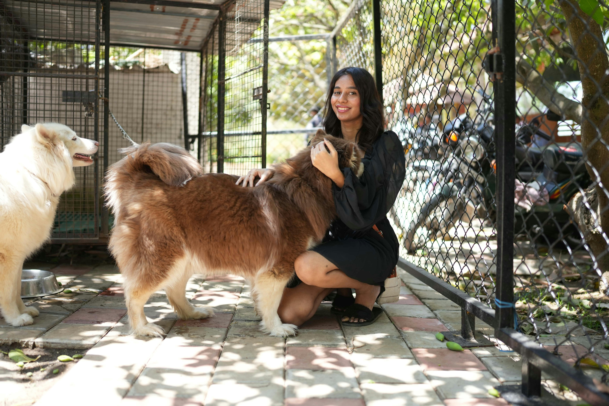
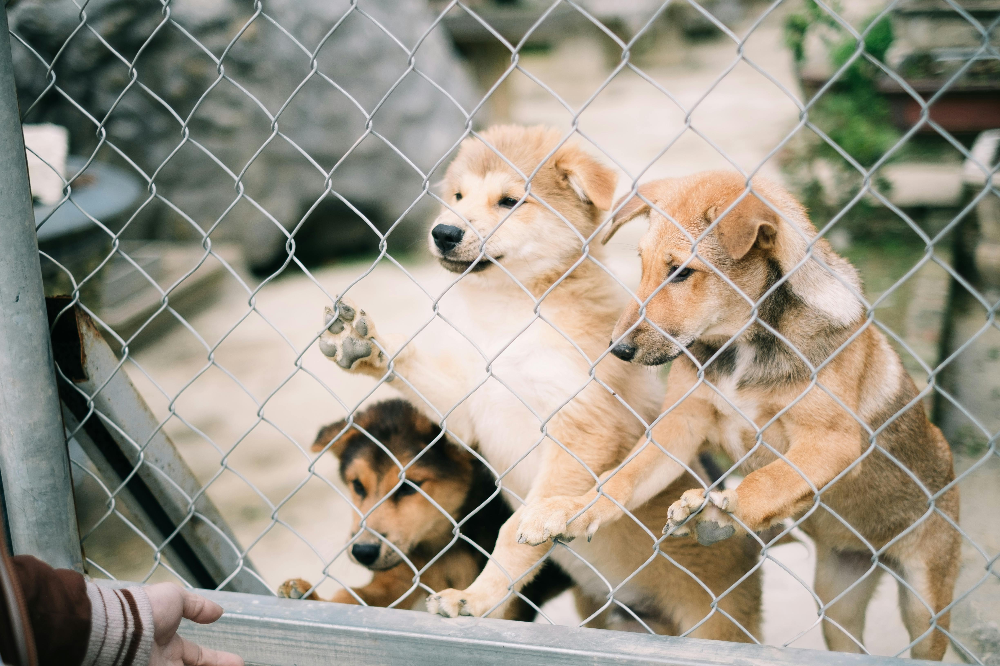
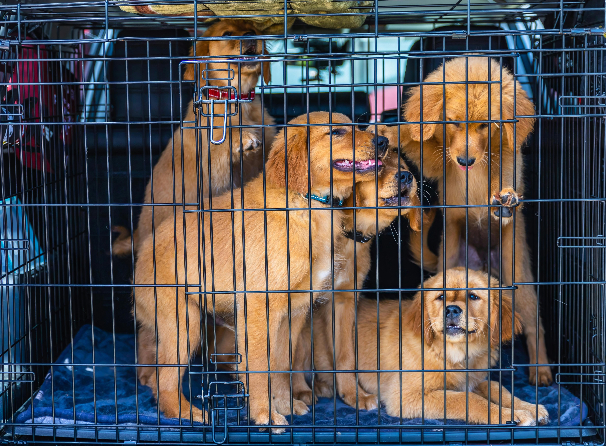

Boarding Services

BOARDING
YOUR PET'S HOME AWAY FROM HOME
At WhiskerWash, we understand that boarding should be a comfortable and stress-free experience for your pet. Our boarding facilities provide a safe and nurturing environment where your furry friend can feel at home while you're away.
Every pet receives personalized attention from our dedicated caregivers, ensuring their comfort and happiness during their stay. From cozy accommodations to engaging activities, we've created a home away from home where your pet can relax and enjoy their time with us.
Boarding at WhiskerWash includes spacious and comfortable bedding, regular meal times with their preferred food, and plenty of playtime to keep them entertained. Whether they enjoy a playful romp in our secure outdoor area or quiet cuddle time, our team is dedicated to making their stay enjoyable and stress-free.
We understand that leaving your pet can be difficult, which is why we provide regular photo and video updates throughout their stay. You'll receive pictures and videos of your pet enjoying their time with us, giving you peace of mind knowing they're happy and well-cared for.
OUR BOARDING SERVICES INCLUDE:
1. PERSONALIZED CARE
Every pet receives individual attention from our dedicated caregivers, ensuring their comfort and happiness during their stay. Whether they enjoy playtime, cuddles, or quiet relaxation, we cater to their specific needs and preferences.
2. COMFORTABLE ACCOMMODATIONS
Our boarding facilities provide spacious and comfortable spaces with cozy bedding, ensuring your pet feels at home. Whether they prefer a quiet corner or a sunny spot, we have the perfect accommodation to suit their needs.
3. REGULAR MEAL TIMES
Your pet will enjoy regular meal times with their preferred food, served at consistent intervals throughout the day. We accommodate special dietary needs and preferences, ensuring they receive proper nutrition during their stay.
4. PLAYTIME & EXERCISE
Your pet will enjoy playtime in our secure outdoor area, where they can romp and play under supervision. We also offer quiet cuddle time for pets who prefer relaxation, ensuring they get the right amount of stimulation and comfort.
5. PHOTO & VIDEO UPDATES
Receive regular photo and video updates throughout their stay. You'll receive pictures and videos of your pet enjoying their time with us, giving you peace of mind knowing they're happy and well-cared for.



Why Choose Us?
• Professional Caretakers:
Our team of skilled and experienced caregivers is dedicated to providing top-notch care for your pets. Trained to handle all breeds and temperaments, they ensure a safe, gentle, and stress-free boarding experience tailored to your pet's unique needs.
• Comfortable Accommodations:
Our spacious and comfortable accommodations provide a cozy retreat for your pet. Each pet enjoys a dedicated space with soft bedding and plenty of room to relax. Whether they prefer a quiet corner or a sunny spot, we have the perfect setup to make them feel at home.
• Regular Meal Times:
Your pet will enjoy regular meal times with their preferred food, served at consistent intervals throughout the day. We accommodate special dietary needs and preferences, ensuring they receive proper nutrition during their stay.